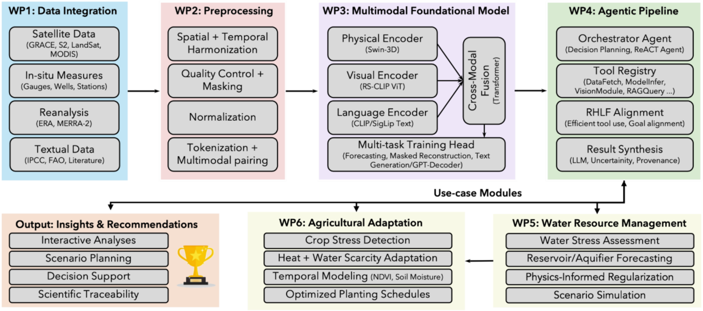
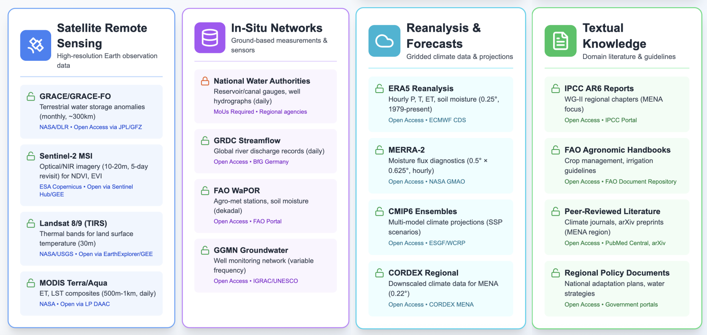
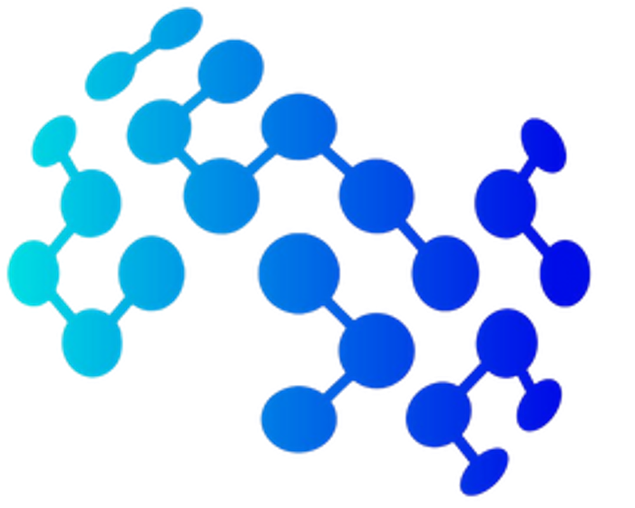
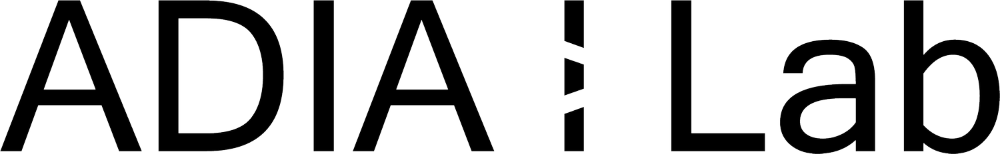

Multimodal Foundation Models
How can AI jointly represent heterogeneous Earth system data and natural language?
- Gridded meteorological data
- Earth observation imagery
- Scientific and contextual knowledge
Current work: EarthAlign & MeteoLIP
Explore →Climate change poses significant challenges across MENA, where extreme heat, water scarcity, and agricultural stress affect ecosystems, resources, and livelihoods. Climate analysis increasingly requires combining heterogeneous information, including gridded meteorological data, satellite observations, ground-based measurements, scientific models, and domain knowledge. However, these sources are often analyzed through separate tools and workflows, making integrated scientific analysis and decision support difficult.
Climate Co-Pilot aims to develop a conversational, scientifically grounded AI system built around a multimodal foundation model and an agentic pipeline. The project investigates how AI can jointly reason over physical Earth system data, imagery, and textual knowledge, while coordinating data retrieval, model inference, scientific tools, simulation, and result synthesis. The longer-term objective is to support interactive analyses and scenario-based decision support for water resource management and agricultural adaptation in MENA.
How can AI jointly represent heterogeneous Earth system data and natural language?
Current work: EarthAlign & MeteoLIP
Explore →How can AI agents decompose complex Earth system questions and reliably use scientific tools to answer them?
Current work: TerraAgent & TerraBench
Explore →Translating multimodal and agentic AI capabilities into climate-sensitive applications in MENA.
Current research has established initial capabilities in agentic Earth system reasoning and meteorology-language representation learning.
An executable agentic framework and benchmark for evaluating grounded reasoning across heterogeneous Earth system data, scientific tools, and simulations.
Learn MoreA large-scale Earth system-language dataset and representation-learning framework for aligning ERA5 meteorological data with natural language.
Learn MoreClimate Co-Pilot connects heterogeneous Earth system data, multimodal representation learning, and agentic reasoning within a unified research workflow.

Satellite observations, in-situ measurements, reanalysis, climate-model data, and textual knowledge.
Models learn representations connecting physical, visual, and language information.
Agents coordinate data retrieval, scientific tools, simulations, and model inference.
Capabilities extend toward water resource management and agricultural adaptation.
Climate Co-Pilot considers complementary Earth system and domain-knowledge sources spanning satellite observations, in-situ measurements, gridded climate data, and scientific literature.

Climate Co-Pilot brings together expertise in multimodal learning, foundation models, agentic AI, Earth system science, and climate applications.



Research outputs, project milestones, collaboration, capacity building, and knowledge-transfer activities.
The Climate Co-Pilot team will participate in the ADIA-Lab Symposium, sharing project progress through talks and poster presentations.
The EarthAlign dataset and MeteoLIP model weights were released publicly to support reproducible research on language-aligned meteorological representation learning.
The Climate Co-Pilot team was invited to contribute the chapter Tool-Augmented Language Agents for Earth Observation.
The project team presented the ongoing agentic and multimodal research directions to ADIA Lab summer interns and prepared introductory Google Earth Engine tutorial materials.
Climate Co-Pilot was launched with support from ADIA Lab to develop a multimodal AI agent for climate resilience in MENA, combining Earth system data, multimodal foundation models, and agentic reasoning to support scientifically grounded analysis and decision support.